In this project, I first used a pretrained flow model to denoise, generate, and edit images. Then I trained UNet models on MNIST to compare single-step denoising with time-conditioned and class-conditioned flow matching. Click any figure to see it at full size.
Part A uses PixNerd-XXL-P16-T2I at 512 × 512 resolution. I used seed 180 as the base seed, Euler step size 0.02, and guidance weight 7 for the guided experiments. The direction of time is important: t = 0 is noise and t = 1 is a clean image.
I used an image of a Ferrari Formula 1 car (I am a big F1 fan) for Sections 1.1–1.5. I sampled one Gaussian noise tensor and reused it at each time, using x_t = (1 − t)ε + t x1. As t increases, more of the car becomes visible. The endpoint checks give pure noise at t = 0 and the original image at t = 1.
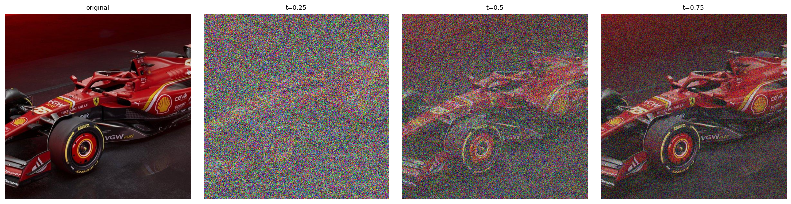
def interpolate(image, noise, t):
return (1 - t) * noise + t * imageI first divided each noisy image by t to restore the image amplitude, then applied Gaussian blur. I tried σ = 1, 2, 4, 8, and 16 and selected the lowest MSE against the original. The selected σ values were 8, 4, and 2 at t = 0.25, 0.50, and 0.75 respectively. Stronger blur removes noise, but also loses the wheel and body details.
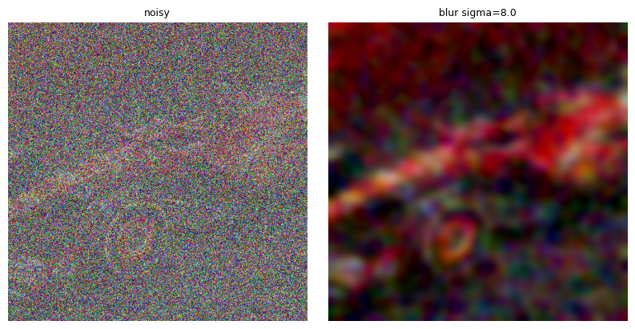
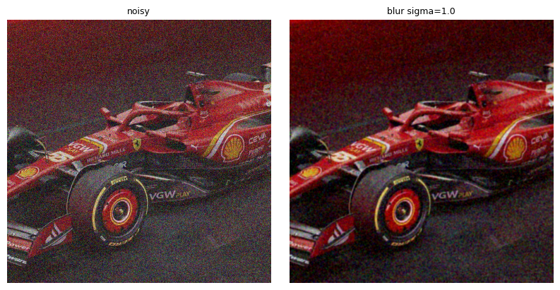
The model predicts velocity. I estimated the clean image with x1 hat = x_t + (1 − t)vθ(x_t, t, c), using the prompt provided of “a high quality photo”. At t = 0.25, the model recovers a red car but smooths away a lot of its detail. At t = 0.75, the estimate is much closer to the original because more information is already present.
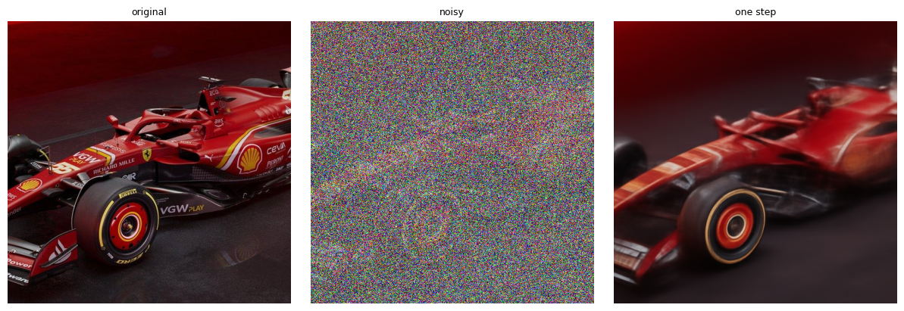
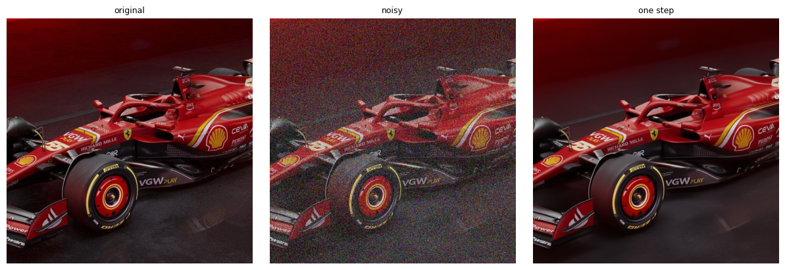
The true velocity for the saved image/noise pair is v_gt = x₁ − ε. I compared the predicted update (1 − t)vθ with the true update x1 − x_t. The error at each pixel is the RMS difference across RGB before display scaling. All the signed updates use the same symmetric scale, with zero at gray, and all error maps use the same color limits.
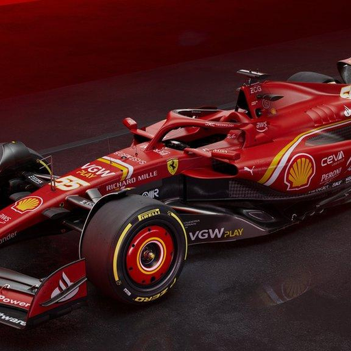
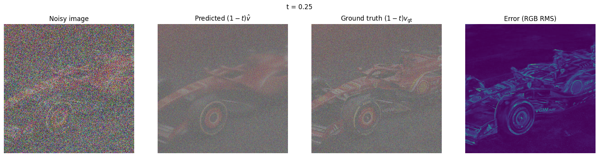
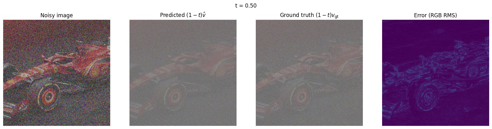
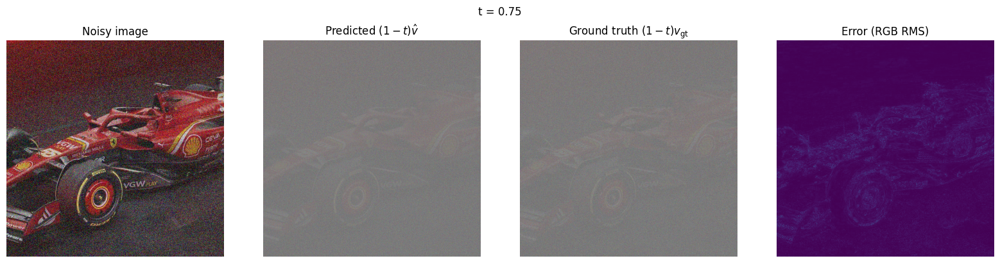
The error maps emphasize the car’s edges and fine markings. The error is strongest at the lowest t, this happens to be where the model has less image information to work with.
I recomputed the velocity after every Euler step using the equation x_next = x + h vθ(x, t, c). Starting at t = 0.50 with h = 0.02 takes 25 updates. The sampler shortens its last step when necessary to end at t = 1. I also checked constant velocity fields, including a start time of 0.93.
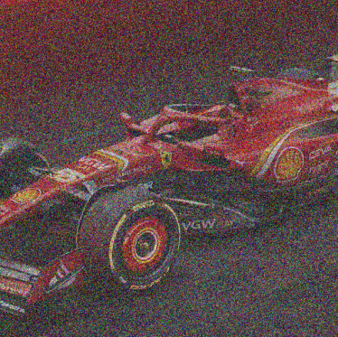
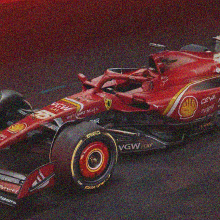
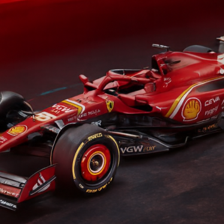
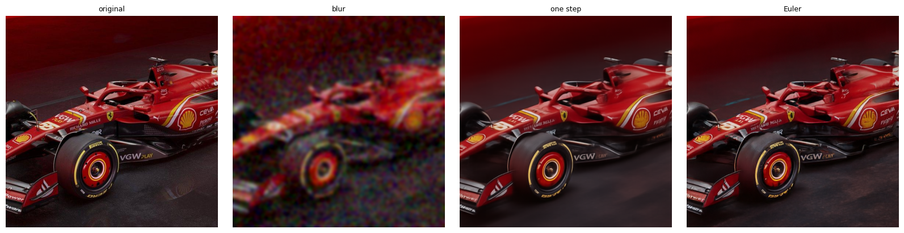
Gaussian blur leaves soft details, while the learned methods create a much clearer, cleaner car. The one step and Euler results look similar here but Euler sampling progressively removes the noise instead of making one large extrapolation.
All of the 26 saved trajectory states.
I started from five independent Gaussian noise tensors and sampled from t = 0 to t = 1 using 50 Euler updates. All five use “a high quality photo”, with seeds 180–184. The generic prompt mostly produces people and portraits rather than a broad variety of scenes.
I evaluated conditional and empty-prompt velocities at the same image and time, then combined them with v_cfg = v_c + w(v_c − v_u). I used w = 7 and reused the five initial noises from Section 1.6. I checked that w = 0 returns the ordinary conditional prediction.
v_c = predict_velocity(x, t, condition)
v_u = predict_velocity(x, t, null_condition)
v_cfg = v_c + w * (v_c - v_u)
The guided results are more consistent head and shoulders portraits. The unguided results have more variation in framing and style, while both sets show a strong bias toward people for this prompt.
For each input, I mixed it with noise at a chosen starting time and integrated to t = 1 using CFG. All of the sweeps use a high quality photo prompt, w = 7, h = 0.02, and starting times 0.02, 0.04, 0.06, 0.10, 0.14, 0.25, and 0.50. Every panel shows the original first, then the seven edits in that order. Smaller starting times allow larger changes; larger starting times preserve the input.

At small starting times, the model replaces much of the tower with a simple white shape. The familiar tower returns as the starting time increases.
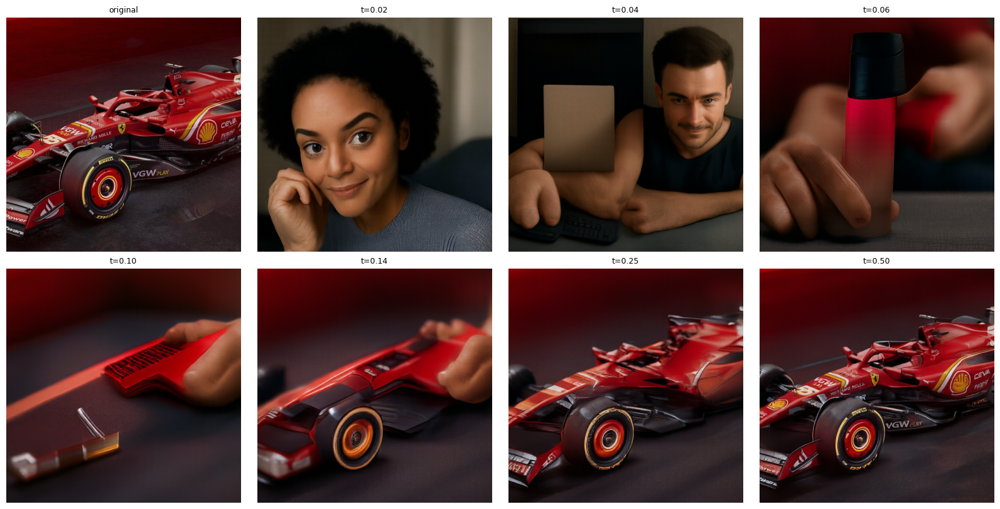
At the smallest times, the car can disappear entirely and become a portrait. The red color and car shape return as more of the input is preserved.
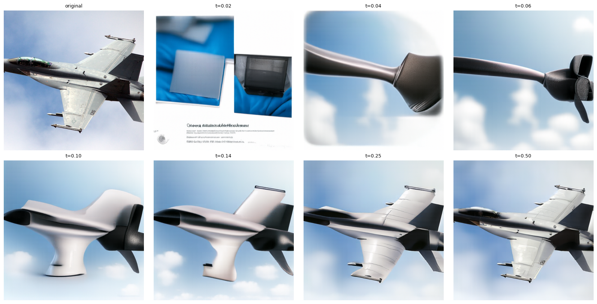
The early outputs reinterpret the F-18 fighter as boxy or abstract forms. At larger starting times, the wings and cockpit remain much closer to the input.
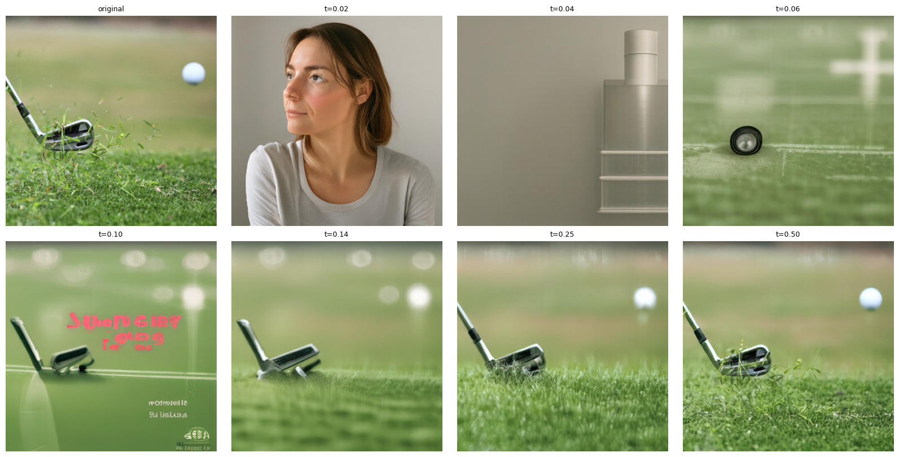
The smallest starting time produces a person instead of the original scene. Increasing the starting time restores the green background and golf scene.
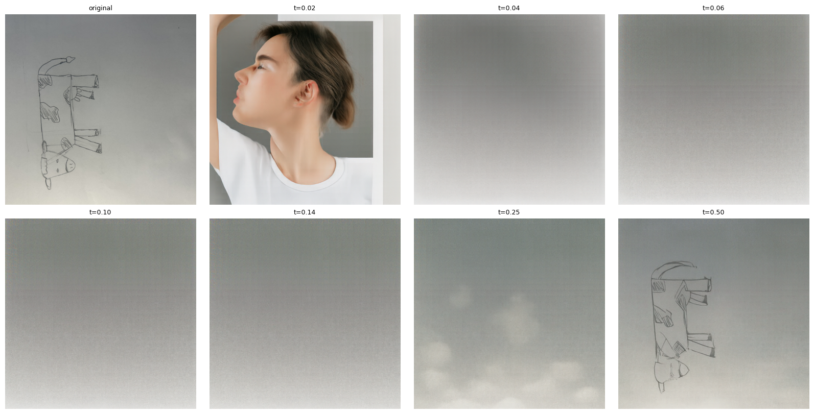
The low-contrast pencil drawing is easily overwhelmed by noise. Most intermediate outputs lose its fine lines, while the larger starting times preserve more of the sketch.
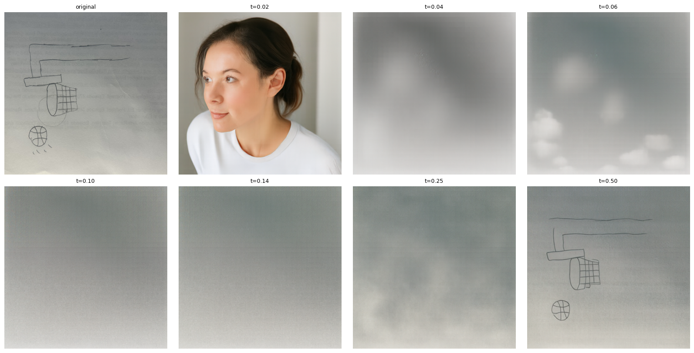
The model does not consistently turn this sketch into a realistic object. At small starting times the drawing is lost; at larger times the original pencil lines return.
I reused the Campanile, Ferrari, and jet images with a different prompt for each. The starting times and sampling settings are the same as Section 3.1.
Prompt: A rocket ship to launch off a launch pad.
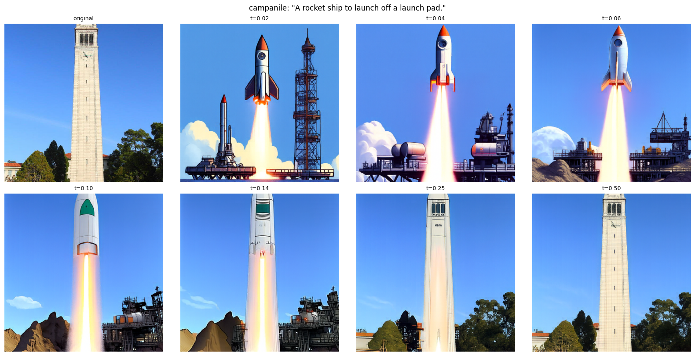
At low starting times, the prompt creates a rocket. At larger times, the original tower dominates. The middle results combine the tall tower shape with rocket features.
Prompt: A lego ferrari formula 1 car
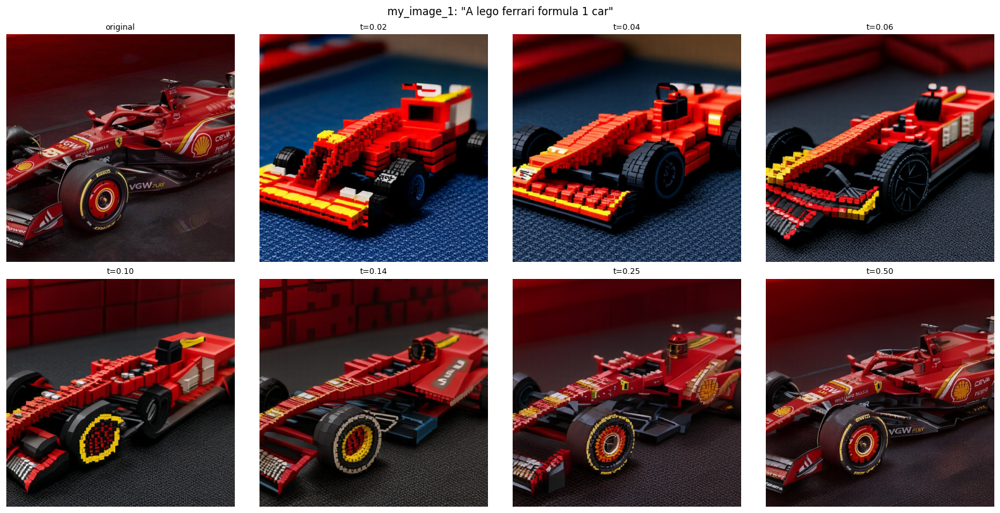
The low and middle starting times produce blocky LEGO-like cars. At high starting times, the output remains closer to the original Ferrari image.
Prompt: A UFO spaceship saucer hovering
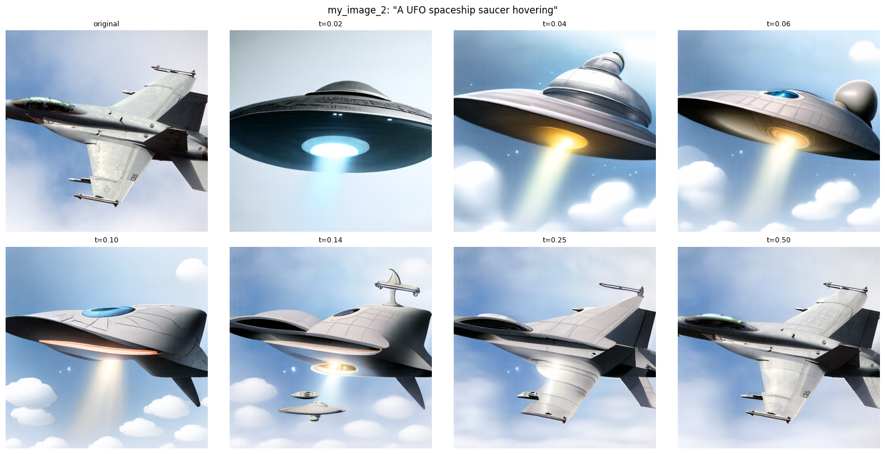
Small starting times produce a flying saucer. As the starting time increases, airplane features return, with intermediate results mixing the two shapes.
At every step, I averaged a guided prediction for the upright image with a second prediction for the image rotated 180°, rotated back into the original coordinates. Both spatial axes are flipped. Each figure shows the same generated image in its two orientations.
Prompts: “an oil painting of a quiet river valley” and “an oil painting of a large snowy mountain”.

The landscape can be interpreted in both directions, although the two subjects overlap visually and the mountain interpretation is less distinct.
Prompts: “a highly detailed illustration of a top half of a polar bear” and “a higly detailed illustration of a duck”.
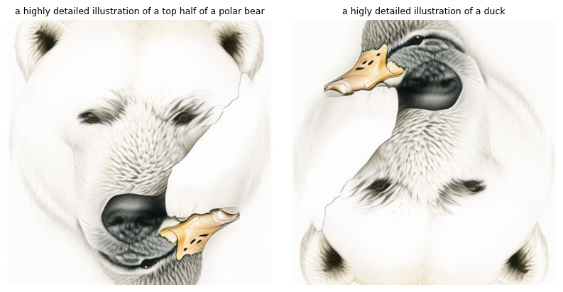
The white fur and dark facial shapes support both views. The duck’s head and beak become easier to see after rotation.
I combined low frequency velocity from one prompt with high frequency velocity from another: v = lowpass(v_a) + v_b − lowpass(v_b). The Gaussian filter uses σ = 16 and kernel size 265. I used the resulting velocity in each Euler update. The small views below are 64 × 64 pixels, so the broad structure is easier to see.
Close / high frequency prompt: “a lithograph of a waterfall”. Distant / low frequency prompt: “a lithograph of a skull”.


Close / high frequency prompt: “a lithograph of a forest”. Distant / low frequency prompt: “a lithograph of a cat”.


The first hybrid uses waterfall like vertical details inside the larger skull shape. The second uses tree trunks as fine detail inside a more broad cat like silhouette. The subjects are easier to separate by changing viewing distance.
For Part B, I trained on the MNIST training split and used held-out test digits for evaluation. Images are 28 × 28 with pixels in [0, 1]. I compared a single-step denoiser, a time-conditioned velocity model, and a model conditioned on both time and digit class.
My UNet uses an encoder with two downsampling stages, a 7 × 7 average-pooling bottleneck, and a decoder with transposed convolutions. Channel wise skip connections bring encoder features back into the decoder. The spatial sizes go from 28 × 28 to 14 × 14 to 7 × 7, then to a 1 × 1 bottleneck and back. With base width D, the encoder widths are D, 2D, and 4D. Downsampling, upsampling, and unflattening use batch normalization and GELU; my ConvBlock consists of two 3 × 3 convolutions.
I added Gaussian noise using z = x + σε. The rows below use σ = 0.0, 0.2, 0.4, 0.5, 0.6, 0.8, and 1.0 from top to bottom, with the same eight training digits in each row. The digit strokes become harder to separate from the noise as σ increases.
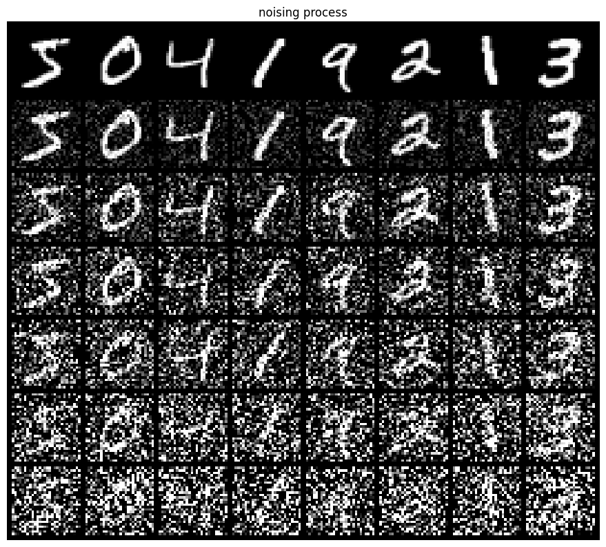
I trained a D = 128 UNet for 5 epochs with batch size 256, Adam learning rate 10⁻⁴, and σ = 0.5. Fresh noise is sampled for each batch. The MSE objective compares the predicted clean image with the original digit. The loss decreases rapidly at the start and then flattens.
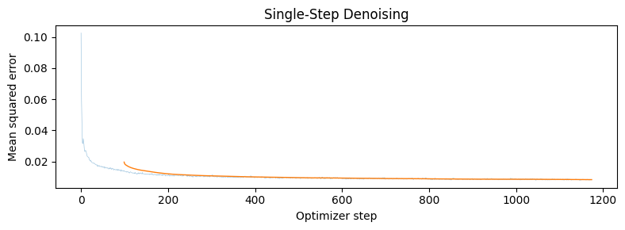
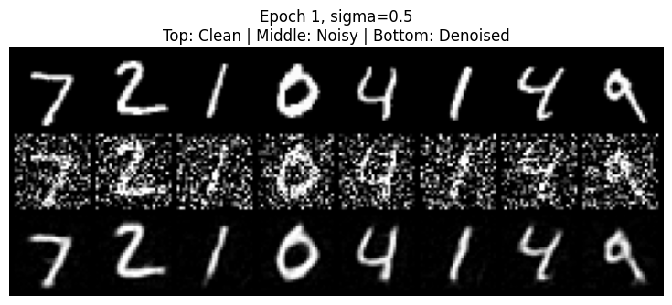
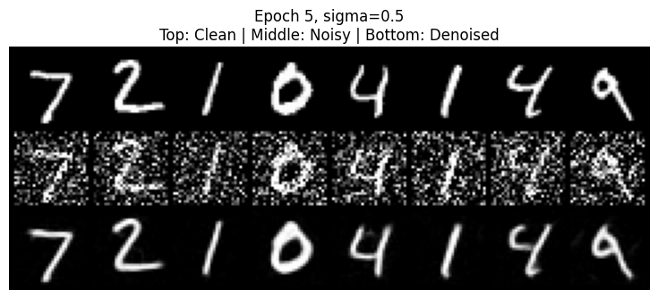
I kept the same eight test digits and varied σ. The top row is clean; the next seven rows show denoised outputs at σ = 0.0, 0.2, 0.4, 0.5, 0.6, 0.8, and 1.0. The model performs well around its training noise level. At σ = 1.0, some digits become distorted or ambiguous because more of the original stroke information is lost.
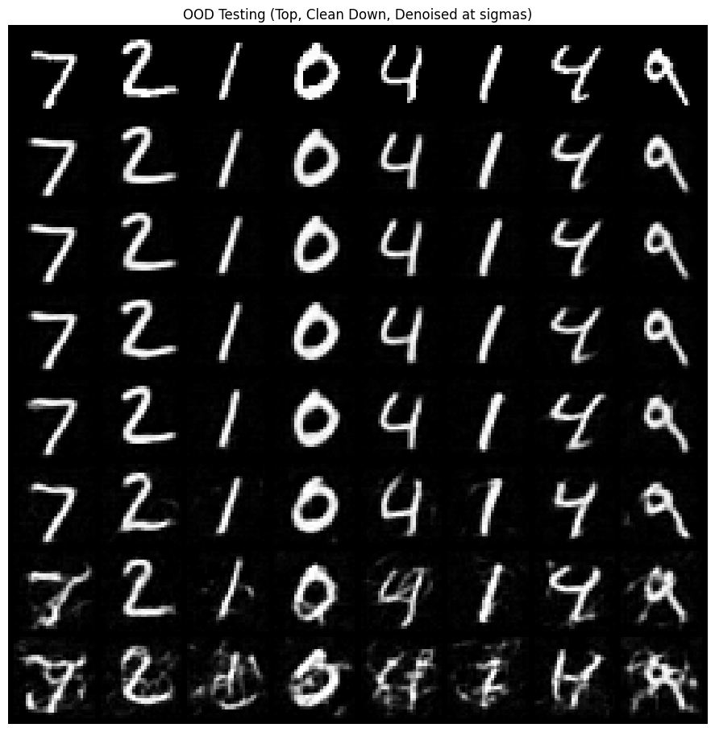
I trained a fresh model for 5 epochs with the same hyperparameters, but paired independent Gaussian noise with clean digits. Since the input noise does not identify the target digit, minimizing MSE favors an average of the possible targets.
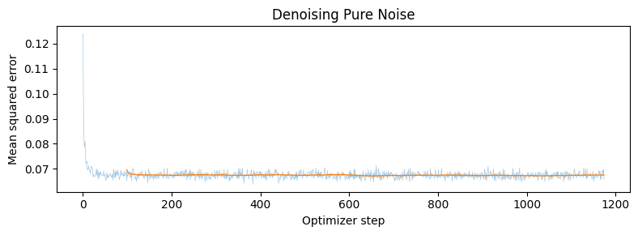
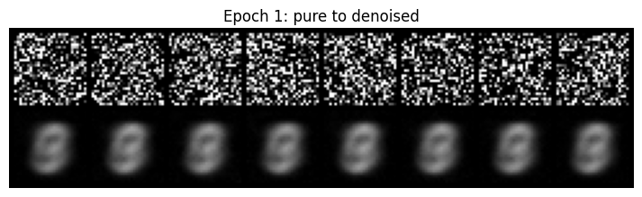
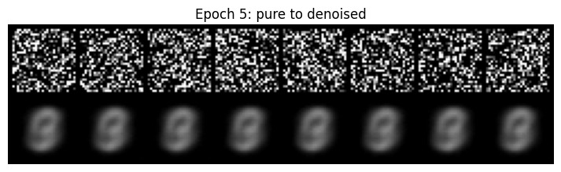
Both checkpoints produce very similar blurry shapes for different noise inputs. The outputs resemble overlapping digit strokes rather than separate digits. This is the same as the pixel wise mean of the training distribution, the MSE optimal prediction when the input provides no information about the target.
For flow matching, I sampled a clean x1, noise x1, and t uniformly from [0, 1]. The input for training is x_t = (1 − t)x₀ + t x1, and the velocity target is x₁ − x₀. The model minimizes MSE between its prediction and that target.
Two fully connected blocks embed the normalized scalar time. Each block uses Linear → GELU → Linear. I then reshape the embeddings to go across the feature maps and multiply them into the unflattened features and the first upsampling block’s output.
I used D = 64, batch size 64, and Adam with initial learning rate 10⁻² for 10 epochs as provided by the course staff. The exponential scheduler multiplies the learning rate by 0.1^(1/10) after each epoch. The initial loss spike dominates the plotted scale, so the later changes are kind of hard to see.
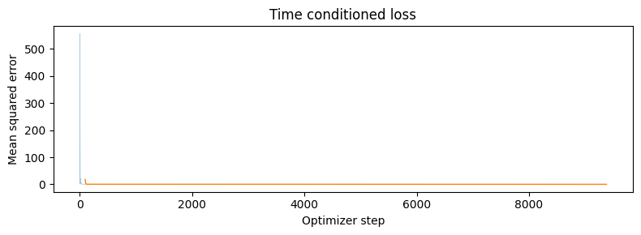
I sampled from pure noise using 50 Euler updates and a fixed seed of 180 at each checkpoint. The first samples are mostly noisy blobs. More digit-like strokes appear with training, but the epoch-10 results still contain substantial noise and several ambiguous digits.
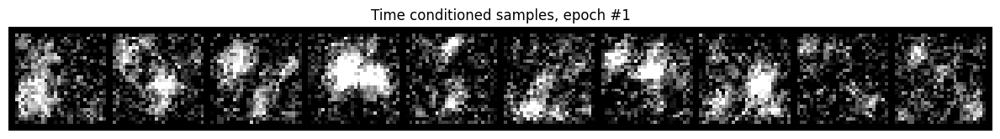
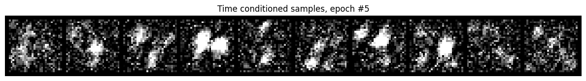
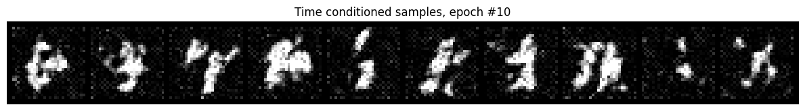
I added two fully connected embeddings of the 10 dimensional one hot digit label. The decoder becomes h = c₁ × h + t₁ after unflattening and h = c₂ × h + t₂ after the first upsampling block. During training, I zero the class vector with probability 0.1 so the model also learns an unconditional prediction.
I now trained two independent D = 64 class conditioned models for 10 epochs with batch size 64. The first uses Adam at initial learning rate 10⁻² with the same exponential decay. The second uses a constant Adam learning rate of 10⁻³. Both use class dropout probability 0.1.
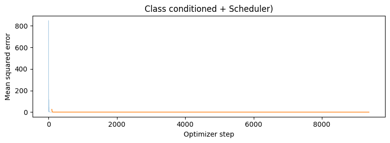
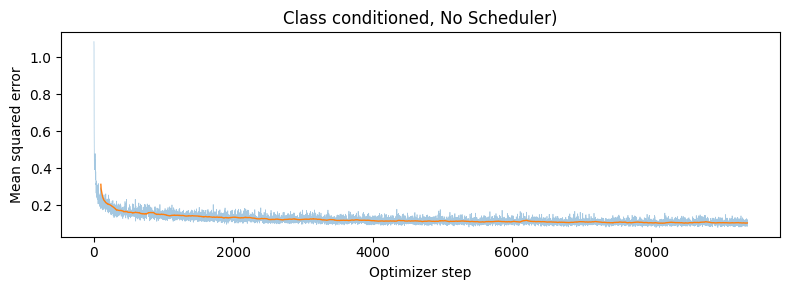
The scheduled run has a very large early loss spike. Its plot uses a much larger vertical range than the constant rate run, so their looking flatness should not be compared directly.
I sampled four instances of each digit with seed 180, 300 Euler steps, and guidance scale γ = 5.0. Part B uses v = v_u + γ(v_c − v_u). In every grid, columns correspond to digits 0–9 and each row provides another instance of those classes.
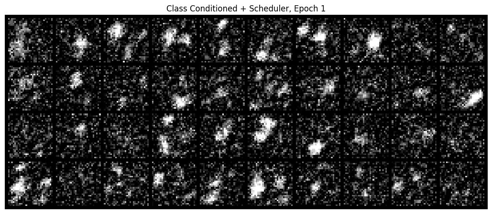
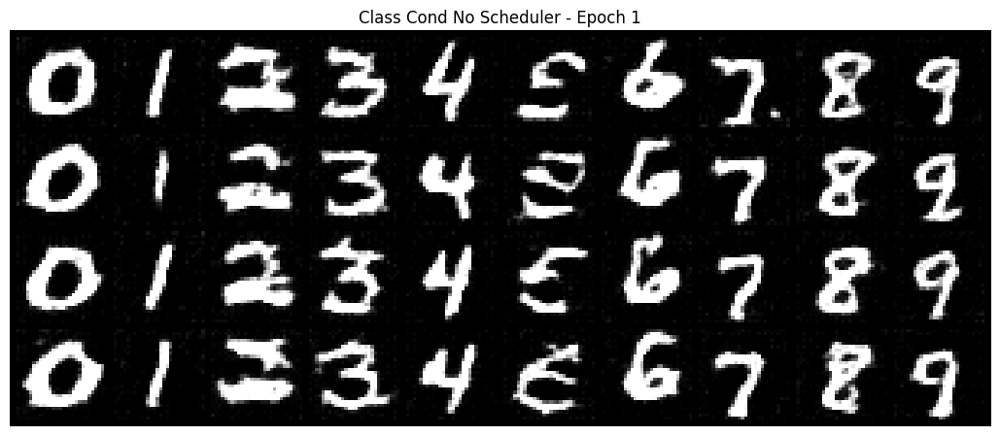
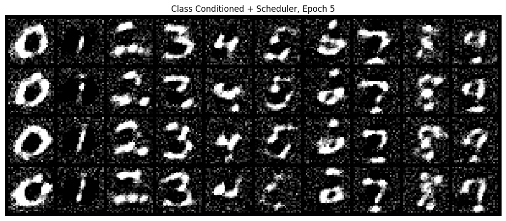
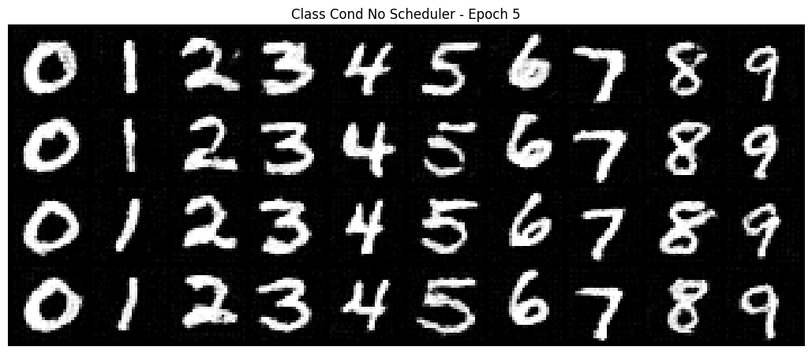
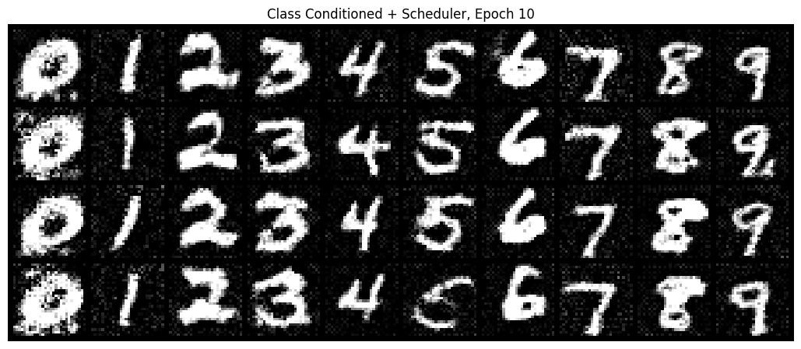
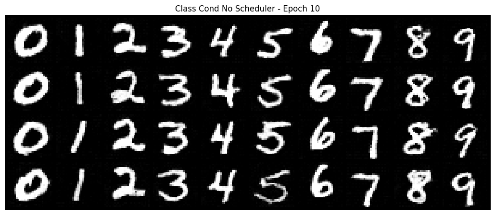
To compensate for removing the scheduler, I reduced the learning rate from 10⁻² to a fixed 10⁻³. In these runs, the constant-rate model produces legible digits earlier and keeps cleaner backgrounds. By epoch 10, the scheduled model also generates recognizable digits but retains more speckled noise. This comparison supports using the lower constant rate here, even though the two models were trained independently and this is a visual comparison not a pure quantitative quality score.
The biggest difference was between trying to predict a whole digit from unrelated noise in one step and learning a velocity field that can be followed gradually. The pure noise denoiser settled on a blurry average, while flow matching produced individual digits. Class conditioning gave me much more control, and the learning rate experiment showed that a simpler constant rate setup could produce cleaner results in this run.